Copyright © 2008, 2026 Obeo - All rights reserved. This program and the accompanying materials are made available under the terms of the Eclipse Public License v2.0
L’outillage de gestion des exigences d’IS Designer apporte un ensemble d’outils permettant d’intégrer la gestion d’exigences d’un projet dans le processus de modélisation. Il est composé d’un éditeur permettant de saisir ses exigences et d’une vue gérant le lien entre les modèles et les exigences du projet.
Pour créer un modèle d’exigences, ouvrir l’assistant depuis le menu :
File > New > Other... > Requirement Model (catégorie IS Designer)
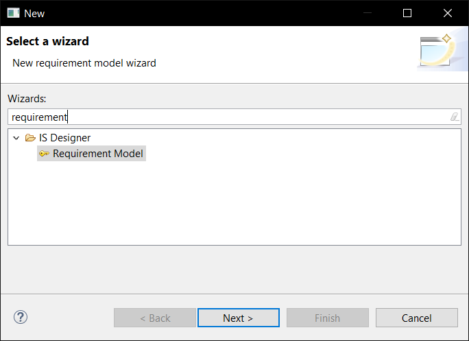
Cet assistant permet de définir :
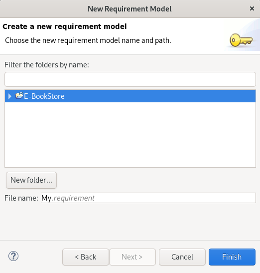
Une fois l’assistant validé, le modèle est créé, la représentation Requirements Table est créée et ouverte afin de commencer l'édition.
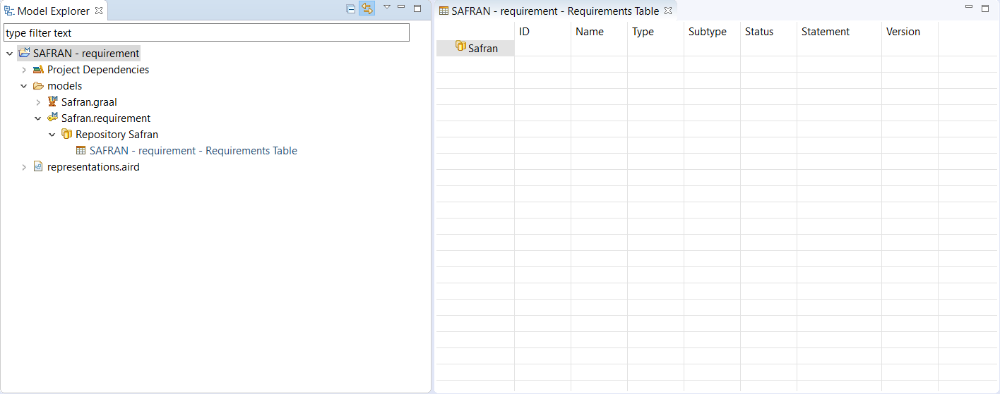
Lorsqu’un modèle d’exigences est créé à l’aide de cet assistant, le point de vue Requirements est activé. Dans le cas où un modèle Graal existe déjà dans le projet, le point de vue Requirements (Graal consolidated view) est activé. Le point de vue Requirements est décrit dans la section Activation du point de vue Requirements. Le point de vue Requirements (Graal consolidated view) est décrit dans la section de documentation ISD – Graal Methodology (ISD consolidated view).
Trois concepts peuvent être manipulés dans un modèle d’exigences : le Repository, les Category et les Requirement.
Le Repository est l'élément racine du modèle. Il porte un nom, contient les catégories principales et peut référencer un élément de modèle.
Une Category est un conteneur d’exigences. Elle sert à ordonner les exigences selon différents critères. Une catégorie porte un identifiant et un nom et peut contenir des sous-catégories et des exigences. Elle peut référencer un objet de modèle.
Enfin, un
Requirement modélise une exigence. Elle est typée selon les critères
Functional ou
Technical et peut porter un sous-type. Une exigence a un identifiant, un nom, un statut et une description (
Statement).
Il est possible de définir sa provenance (
Rationale), ses critères d’acceptation (
AcceptanceCriteria) et de référencer un objet de modèle.
À noter qu’un
Requirement a aussi un numéro de version. Ce numéro de version est initialisé à 1 et peut simplement être incrémenté de 1 en 1 en utilisant le bouton
+1 affiché sur la vue
Properties pour l’exigence.
L’outillage de gestion d’exigences embarque un point de vue permettant :
La création nécessite dans un premier temps l’activation du point de vue Requirements. Pour cela, sur une session Viewpoint ouverte, lancer le menu
Viewpoint Selection
Choisir le point de vue Requirements.
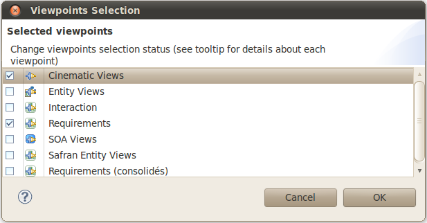
Une fois le point de vue activé, il est possible de créer un tableau Requirements Table sur un Repository d’exigences ou sur n’importe quelle Category. Il est ainsi possible de visualiser plus ou moins d’exigences selon le contexte choisi.
La création de ce tableau se fait via le menu :
New > new Requirements Table
Ce tableau permet de créer, modifier et supprimer des catégories et des exigences.
Les informations sont affichées en colonnes dont le contenu peut être édité directement.
L’objet sélectionné peut aussi être modifié via la vue
Properties.
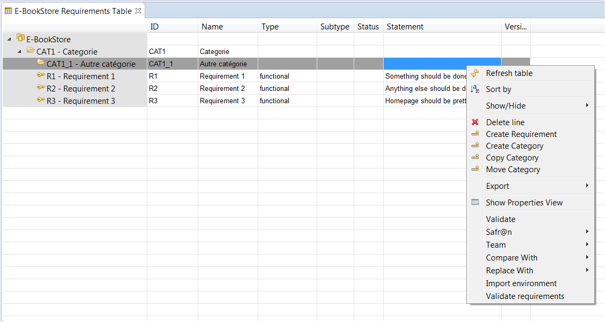
Le menu contextuel propose les actions suivantes :
Le point de vue permet de créer une matrice de traçabilité des exigences sur un Repository d’exigences. La création de cette matrice se fait via le menu :
New > new Requirements Traceability Matrix
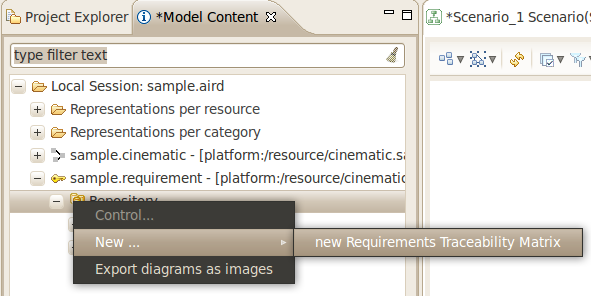
Une matrice de traçabilité présente les éléments d’exigences du modèle en ligne et les éléments référencés en colonnes. Une croix est présente si l’exigence de la ligne référence l’objet de la colonne.
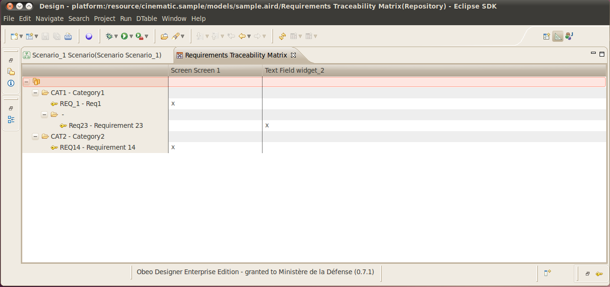
Il est possible d'éditer les cellules. Si une cellule est vidée, la référence entre l’exigence et l’objet est supprimée.
La vue Linked Requirements permet de lier les exigences aux éléments des modèles édités dans IS Designer. Ouvrir la vue depuis le menu :
Window > Show View > Other... > Linked Requirements (catégorie Information System Designer)
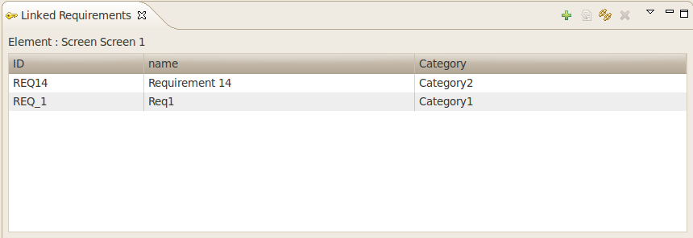
Cette vue est synchronisée avec l'éditeur actif dans IS Designer. Quand un élément de modèle est sélectionné, la vue se met à jour et présente toutes les exigences qui ont été liées à cet élément.
Cette vue porte cinq actions permettant de manipuler rapidement les exigences sans avoir à passer par l'éditeur décrit dans la partie précédente.
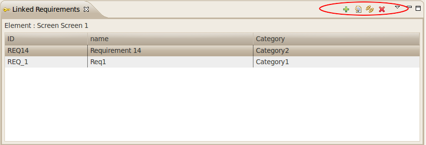
La première action permet de créer et de lier directement une nouvelle exigence à la sélection courante.
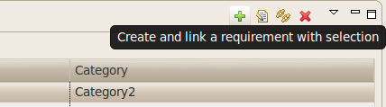
Au lancement de l’action, un assistant s’ouvre permettant de créer une nouvelle exigence. Toutes les propriétés de l’exigence peuvent être renseignées sur la première page. La seconde page permet de choisir la catégorie dans laquelle l’exigence va être positionnée. Dans le cas où celle-ci n’existe pas, il est possible d’utiliser le bouton New Category... pour en créer une nouvelle.
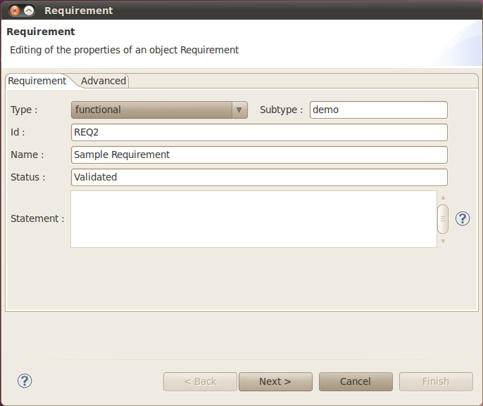
-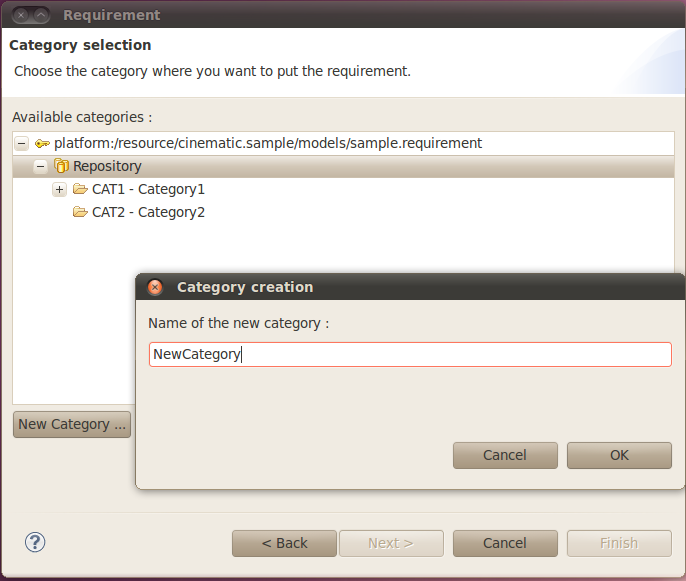
Une fois l’assistant validé, l’exigence est créée à l’endroit spécifié et est liée à l’objet actuellement sélectionné. La vue Linked Requirements est mise à jour.
La seconde action de la vue permet d'éditer une exigence présente dans la vue.
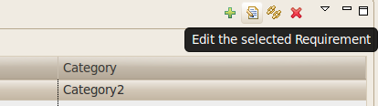
Elle s’active en sélectionnant une exigence dans la liste des exigences liées et son lancement ouvre l’assistant d'édition de façon à pouvoir modifier les propriétés de cet objet.
La troisième action permet de gérer l’association entre les éléments de modèle et les exigences.
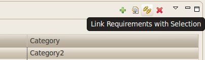
Le lancement de l’action ouvre une boîte de dialogue pour le choix des exigences à associer à l'élément actuellement sélectionné.
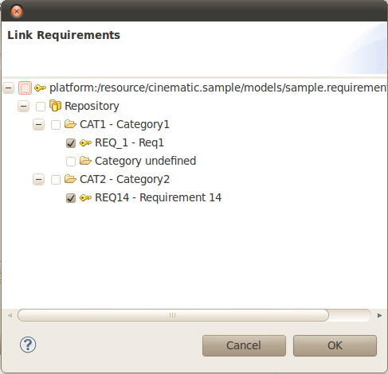
La quatrième action permet de supprimer l’association entre une ou plusieurs exigences et l'élément actuellement sélectionné.
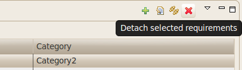
Cette action s’active lorsqu’une ou plusieurs exigences sont sélectionnées parmi les exigences liées de la vue. Son lancement supprime tous les liens entre ces exigences et l'élément sélectionné.
Une boîte de confirmation s’ouvre au lancement de l’action pour limiter les erreurs de manipulation.
L’utilisation de cette action ne supprime pas l’exigence du modèle. Seul le lien entre l’exigence et l'élément est supprimé. Il est tout à fait possible de créer un lien entre l’exigence et un autre élément.
La cinquième action permet d’activer ou désactiver l’affichage des exigences liées aux éléments fils de l'élément sélectionné.
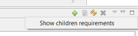
Avec l’option désactivée, seules les exigences directement rattachées sont affichées :
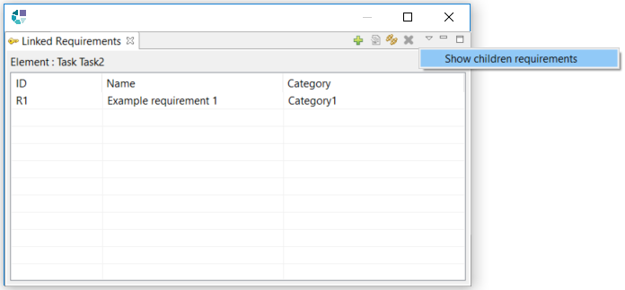
Quand cette option est activée, les exigences attachées à des éléments fils de l'élément sélectionné sont affichées en plus de celles rattachées directement à l’objet sélectionné.
Ces exigences sont affichées en gris et en italique pour permettre de les différencier.
De plus, en survolant une ligne, une infobulle contenant le nom de l'élément concerné s’affiche.
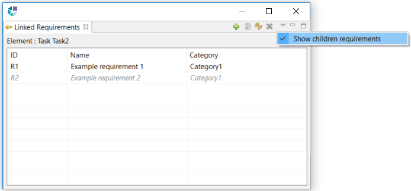
Des décorateurs permettent de visualiser rapidement les éléments ayant au moins une exigence rattachée sans avoir à sélectionner l'élément ni à consulter le contenu de la vue Linked Requirements.
Ces décorateurs sont affichés dans la vue Model Explorer et sur les diagrammes.
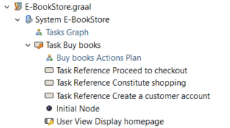
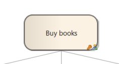
Les décorateurs peuvent être de trois couleurs différentes :
Pour activer ou désactiver globalement les décorateurs, ouvrir le menu Window > Preferences, puis la rubrique General > Appearance > Label decorations. Cocher ou décocher Object with requirements.
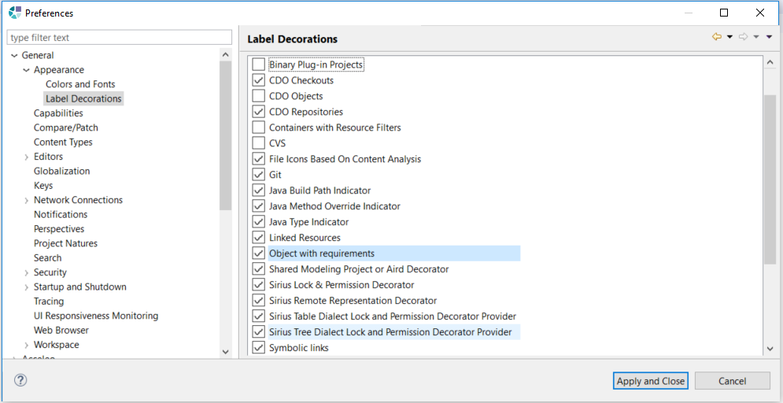